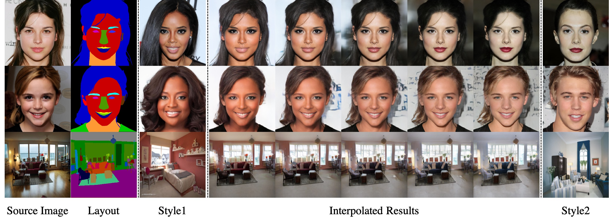
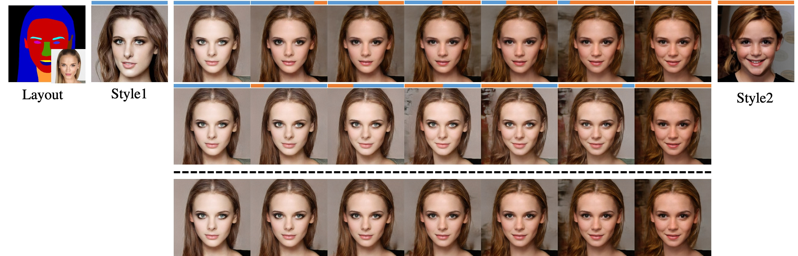

Labels4Free: Unsupervised Segmentation using StyleGAN
1KAUST
2 UCL, Adobe Research
We propose an unsupervised segmentation framework that enables foreground/background separation for raw input images. At the core of our framework is an unsupervised network, which segments class-specific StyleGAN images, and is used to generate segmentation masks for training supervised segmentation networks.
Abstract
We propose an unsupervised segmentation framework for StyleGAN generated objects. We build on two main observations. First, the features generated by StyleGAN hold valuable information that can be utilized towards training segmentation networks. Second, the foreground and background can often be treated to be largely independent and be composited in different ways. For our solution, we propose to augment the StyleGAN2 generator architecture with a segmentation branch and to split the generator into a foreground and background network.
This enables us to generate soft segmentation masks for the foreground object in an unsupervised fashion. On multiple object classes, we report comparable results against state-of-the-art supervised segmentation networks, while against the best unsupervised segmentation approach we demonstrate a clear improvement, both in qualitative and quantitative metrics.
Network Architecture
Our unsupervised segmentation network that makes use of pretrained generators G and G_bg to simultaneously train a segmentation network A and a `weak' discriminator D, without requiring supervision for ground truth masks.
Results and Applications
1. Image Reconstruction
Visual comparison of semantic image synthesis results on the CelebAMask-HQ, ADE20K, CityScapes and
Facades dataset. We compare Pix2PixHD, SPADE, and our method.
2. Image Editing
Editing sequence on the ADE20K dataset. (a) source image, (b) reconstruction of the source image,
(c-f) variousedits using style images shown in the top row. The regions affected by the edits are shown as small insets.
3. Style Transfer
Style transfer on CelebAMask-HQ dataset.
4. Style interpolation & Style Crossover

Style interpolation. We take a mask from a source image and reconstruct with two different style images (Style1and Style2)
that are very different from the source image. We then show interpolated results of the per-region style codes.

Style crossover. In addition to style interpolation (bottom row), we can perform crossover by selecting differentstyles per ResBlk. We show two transitions in the top two rows.
The blue / orange bars on top of the images indicate whichstyles are used by the six ResBlks.
We can observe that earlier layers are responsible for larger features and later layersmainly determine the color scheme.
Bibtex
@misc{zhu2019sean,
title={SEAN: Image Synthesis with Semantic Region-Adaptive Normalization},
author={Peihao Zhu and Rameen Abdal and Yipeng Qin and Peter Wonka},
year={2019},
eprint={1911.12861},
archivePrefix={arXiv},
primaryClass={cs.CV}
}